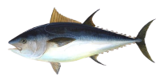
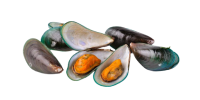
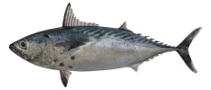
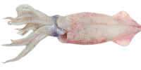
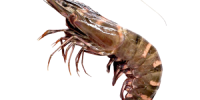
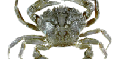

Himpunan Nelayan Seluruh Indonesia (HNSI) Kota Tegal, mendukung wacana Kementerian Kelautan dan Perikanan (KKP) untuk meningkatkan....


Dinas Kelautan dan Perikanan, Pertanian dan Pangan Kota Tegal gencarkan gerakan Ayo Makan Ikan (Gemarikan) Menuju Generasi Sehat, Cerdas dan Kuat.

Produk perikanan di wilayah Tegal dipastikan bebas formalin. Hal ini diketahui setelah serangkaian pengujian di Pasar Anyar, Pasar....
DATA PERIKANAN KOTA TEGAL 2021
Total Berat
23.775 TON
Total Penjualan
Rp. 323.105.616
Titik penjualan
3
PELABUHAN YANG ADA DI TEGAL

PELABUHAN TEGALSARI
PPP Tegalsari yang berlokasi di pesisir pantai Utara Laut Jawa yang tepatnya di Kelurahan Tegalsari, Kecamatan Tegal Barat, Kota Tegal, Provinsi Jawa Tengah, yang pada posisi 109°10’0” BT dan 07°01’0” LS.
TPI MUARA REJA
TPI Muarareja adalah salah satu TPI yang ada di kota tegal yang berlokasi di kelurahan muarareja dan alamat di google maps 5434+HJF, Muarareja, Kec. Tegal Bar., Kota Tegal, Jawa Tengah 52117


TPI JONGOR
Tempat pelelangan ikan jongor merupakan salah satu tempat pelelangan ikan dibawah binaan Dinas Kelautan dan Perikanan, Pertanian dan Pangan Kota Tegal.


KAKAP MERAH
Kakap merah adalah jenis ikan kakap yang tubuhnya berwarna merah. Seluruh spesies kakap merah termasuk dalam famili Lutjanidae.

TUNA
Tuna adalah ikan laut pelagik yang termasuk tribus Thunnini, terdiri dari beberapa spesies dari famili skombride, terutama genus Thunnus.

KERANG
Kerang hijau (Perna viridis)atau dikenal sebagai green mussels adalah binatang lunak (moluska) yang hidup di laut....

TONGKOL
Ikan Tongkol (Euthynnus Affinis), penyebaran tongkol sangat luas bahkan hampir diseluruh daerah pantai dan laut lepas pantai perairan Indo-Pasifik.

CUMI
Cumi-cumi adalah kelompok hewan sefalopoda besar atau jenis moluska yang hidup di laut. Nama "Sefalopoda" dalam bahasa Yunani berarti "kaki kepala"

UDANG
Udang adalah binatang yang hidup di perairan, khususnya sungai, laut, atau danau. Banyak krustasea yang dikenal dengan nama "udang”.....

KEPITING
Kepiting adalah sejenis hewan krustasea yang hidup di lingkungan air, terutama di lingkungan laut dan air asin. Mereka.....